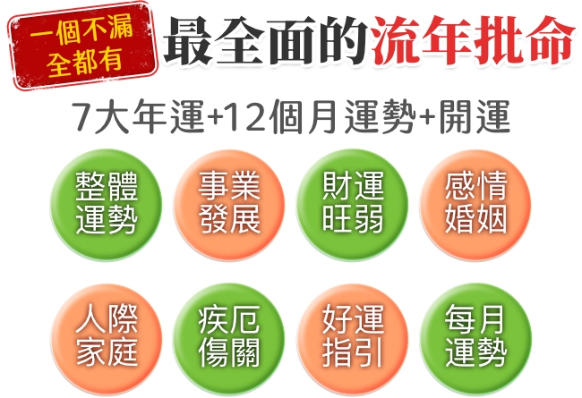
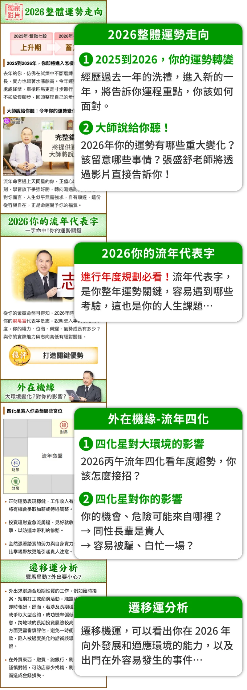
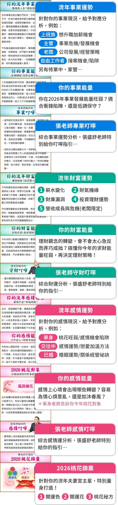
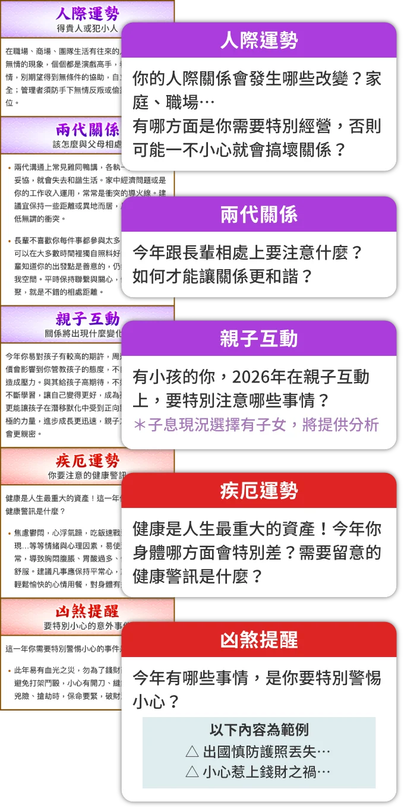
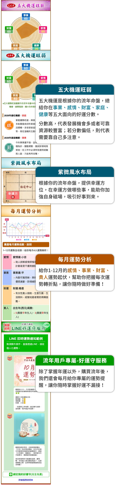

張盛舒2026紫微流年運勢
親愛的 Mary Chen 你好：
讓我先從你的紫微命盤，分析你的本命個性。
- 命宮主星
- 天機天梁(借對宮)
- 事業
- 部屬
- 遷移
- 疾厄
- 田宅
- 財帛
- 福德
- 子女
- 父母
- 命宮
- 兄弟
- 夫妻
你的命宮主星是天機、天梁，屬於支援合作型，你最大的特色是聰慧靈巧，多才多藝，給人能言善道的形象。你也非常善解人意，在周圍的人需要幫助時，你從不吝嗇伸出援手。因為你有一顆溫暖的心，即使只是小小的舉動都能讓人感動不已。
從你的命盤來看，2026流年命宮主星走到武曲天府。流年的轉換，將會對你的運勢產生什麼影響？又該如何趨吉避凶、掌握機運？
2026年2月17日~2027年2月5日
天同、太陰
流年命宮主星： 天機、天梁
-
生命旅程進入驛馬星動期，易因家庭、感情、經濟、置產…等考量因素而搬遷居所、轉換工...
流年事業宮主星： 太陽、巨門借對宮
-
面臨異動時必須靜下心來，做好份內事，不輕易請辭，以免陷入長時間找不到新工作的窘境...
流年財帛宮主星： 天同、太陰借對宮
-
面臨異動時必須靜下心來，做好份內事，不輕易請辭，以免陷入長時間找不到新工作的窘境...
流年夫妻宮主星： 太陽、巨門
-
工作不順、家務繁瑣、長輩晚輩要照顧等，都會成為夫妻爭吵的因素...
流年子女宮主星： 武曲、貪狼借對宮
-
受到流年命宮天機天梁、流年子女宮武曲貪狼的影響，讓你易把大部分時間和精力都用在孩...


限時優惠倒數中
原價NT$1,200
早鳥價NT$840



